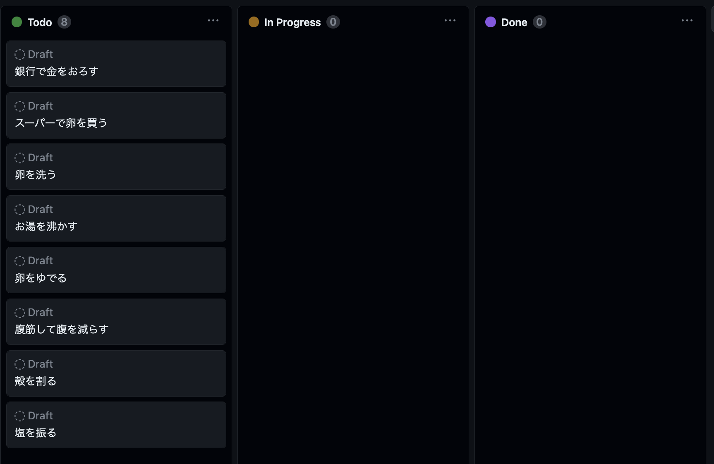
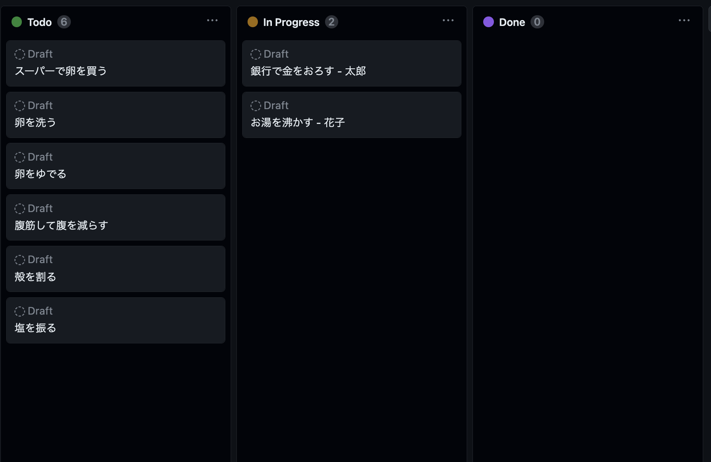
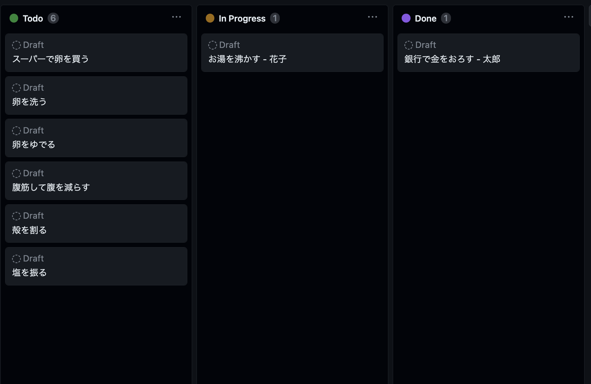
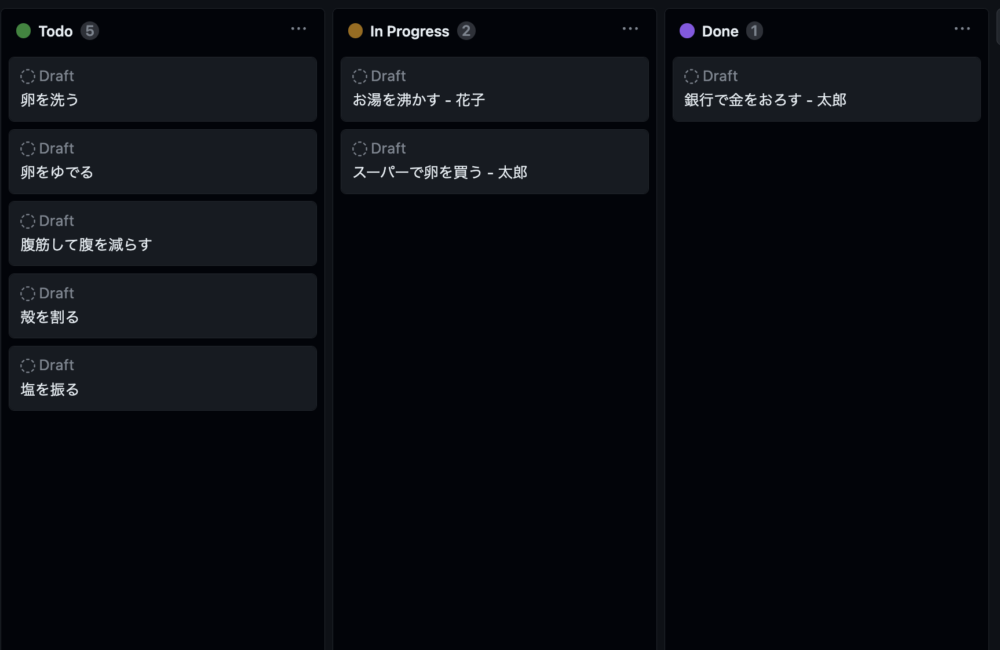

では実際に「ゆで卵を食べる」ことを目的にカンバンを使ってみましょう。
今回は Githubのカンバン(Projects)機能を使って説明します。
まずタスクの初期状態は以下の様にしました( WBSと比較してください)。

次に依存関係に気を付けつつ、2人のメンバー(太郎と花子)が自分が担当するタスクを選んで名前を記入し、「Doing」状態にします。

さて太郎は作業が終わったのでタスクを Done 状態にします。花子はまだ作業中です。

花子はまだ作業中ですが、太郎は花子が実行しているタスクに依存しないタスクを選んでまた Doing 状態にし作業を開始します。

以上を繰り返すといつかは全てのタスクが Done 状態になってプロジェクト完了になります。